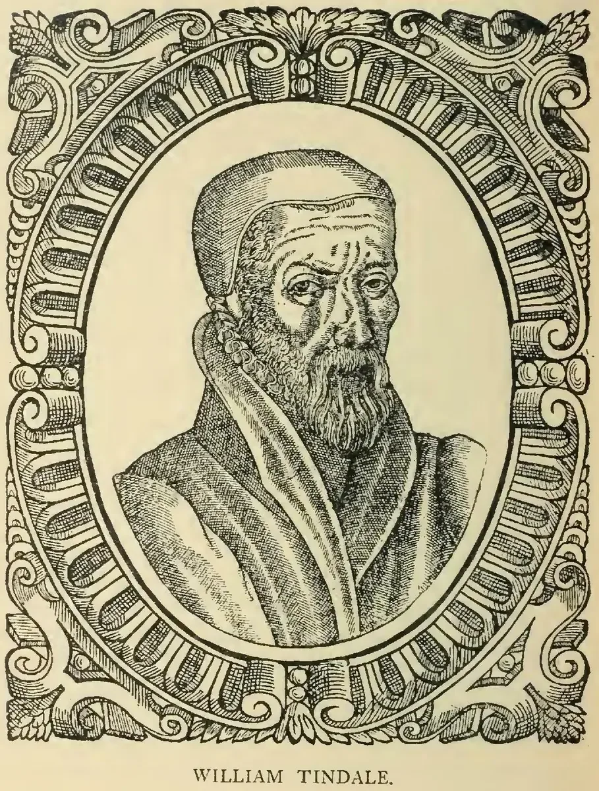
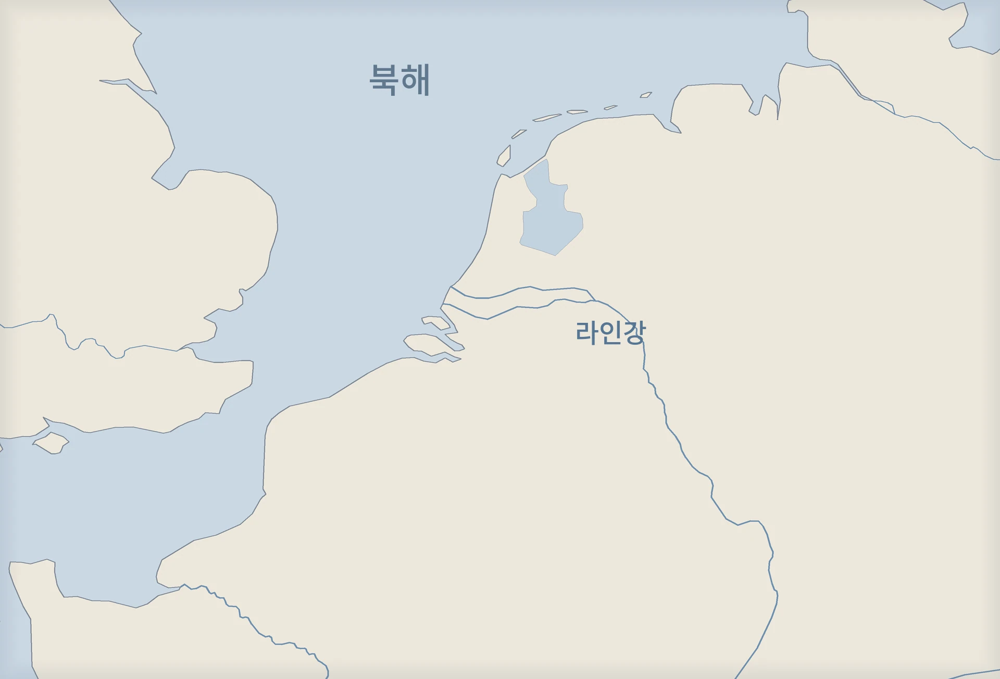
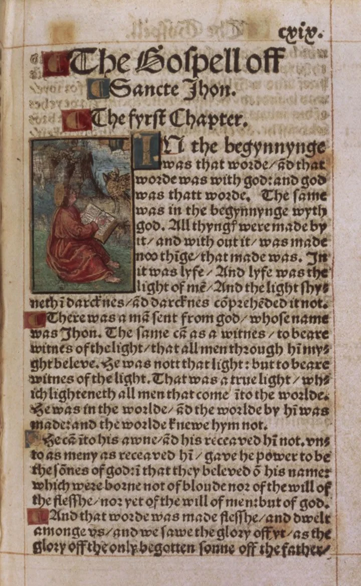
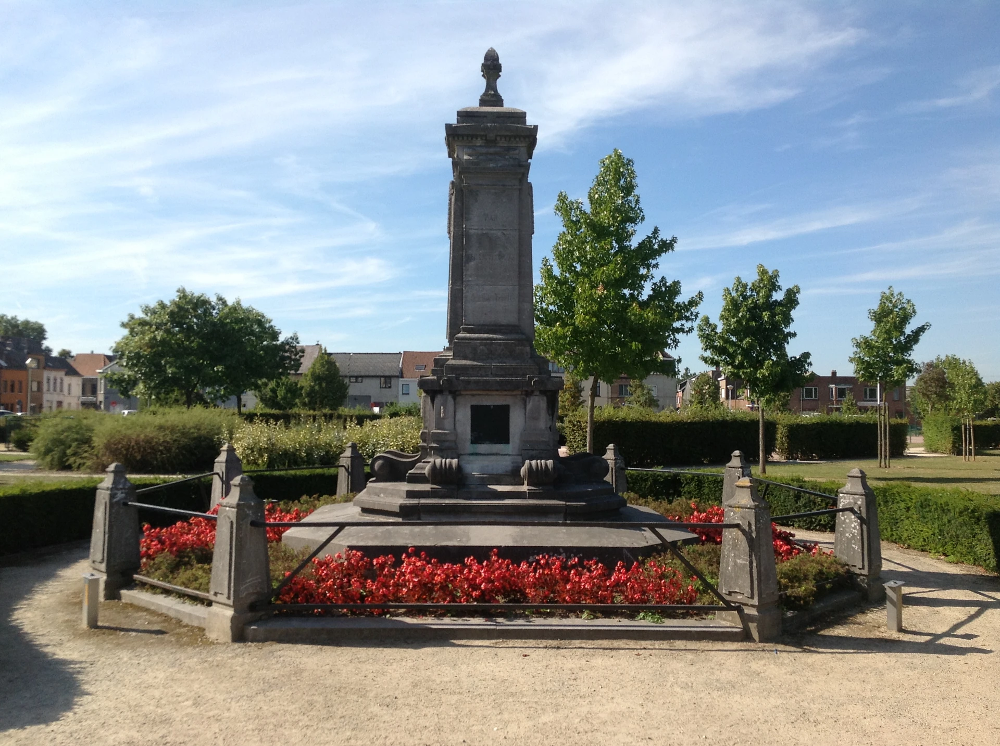

아직 펼치지 않은 카드모두의 말로 찍은 성경 · 4윌리엄 틴데일‘희생양(scapegoat)’이라는 영어 낱말을 처음 쓴 사람은 성경 번역자였어요. 그는 왜 목숨을 걸고 성경을 옮겼을까요?영어 낱말을 새로 만든 성경 번역자가 있었대!
1524~1536년잉글랜드에서 라인강을 따라 빌보르드까지
윌리엄 틴데일
1524년, 윌리엄 틴데일은 성경을 영어로 옮길 자리를 찾아 잉글랜드를 떠났어요. 그때 잉글랜드에서는 허락 없이 성경을 옮길 수 없었거든요. 그는 다시는 돌아가지 못했어요. 쾰른에서는 찍던 일이 들통나 달아났고, 보름스에서 찍은 작은 신약 성경은 바다를 건너 잉글랜드로 갔어요. 그는 빌보르드 감옥에서 등불 하나를 부탁하는 편지를 썼어요. 그 길을 지도 위에서 따라가요.
500년 전, 성경을 영어로 옮기려고 먼 길을 떠난 사람이 있었대. 지도 위에서 그 길을 같이 따라가 볼까?
검수 전 시안이에요(기준서 2판). 길과 때는 틴데일이 직접 쓴 머리말, 대학·도시·도서관의 기록과 학자들의 설명을 따랐고, 서로 다른 곳은 ‘기록마다 다른 점’에 적었어요. 지도는 이 안내서가 그렸어요. 감옥 편지는 1884년 몸버트의 영어 번역을 이 안내서가 우리말로 옮겼어요. 상상은 ‘눈 감고 상상해 보기’에만 썼어요.
시안 확인용카드 단계 미리 보기
1
모국어로, 눈앞에
1520년대 초, 윌리엄 틴데일(William Tyndale)은 잉글랜드 서쪽 글로스터셔에 사는 존 월시 경의 집에서 가정 사제(한 집안에 머물며 예배를 맡은 성직자)로 일했어요. 1522년 무렵에는 우스터 교구의 챈슬러 앞에 불려 가기도 했어요. 챈슬러는 교구의 재판을 맡은 성직자이고, 그가 받은 혐의는 이단(교회가 그릇되었다고 정한 가르침)이었어요.
그는 성경을 영어로 옮기려 한 까닭을 뒷날 이렇게 적었어요.
“성경이 모국어로 보통 신자들의 눈앞에 똑똑히 놓여 글의 흐름과 차례와 뜻을 스스로 보지 않는 한, 그들을 어떤 진리 위에도 굳게 세울 수 없다는 것을 겪어 보고 알았습니다.”
틴데일, 「W.T.(그의 이름 머리글자)가 읽는 이에게」 · 1530년에 펴낸 모세오경(구약의 첫 다섯 권)의 머리말 · Bible Research에 실린 글을 이 안내서가 옮김
그 무렵 잉글랜드에서는 1409년부터, 주교나 교회 회의의 허락 없이 성경을 새로 영어로 옮길 수 없었어요. 그는 런던으로 가서 커스버트 턴스털(Cuthbert Tunstall) 주교의 후원을 구했지만, 거절당했어요. 런던에서 거의 한 해를 지낸 뒤 이렇게 깨달았다고 적었어요. 런던 주교의 궁에는 신약을 옮길 자리가 없고, 온 잉글랜드에도 그럴 곳이 없다고요.
‘쟁기질하는 아이’ 이야기도 전해져요. 존 폭스의 1563년 책에 따르면, 틴데일은 한 학자에게 “쟁기질하는 아이가 당신보다 성경을 더 잘 알게 하겠다”고 말했어요. 다만 폭스가 누구에게서 들었는지 알 수 없어서, 학자들은 틴데일이 직접 쓴 글을 먼저 보자고 해요.
틴데일 아저씨는 누구나 성경을 영어로 읽기를 바랐대. 그런데 잉글랜드에서는 옮길 자리가 없었어.
물어보기하고 싶은 일을 할 자리가 없으면, 어떻게 할까?
2
라인강을 따라
1524년, 틴데일은 런던의 옷감 상인 험프리 먼마우스(Humphrey Monmouth)의 도움을 받아 다른 이름으로 잉글랜드를 떠났어요. 독일 함부르크에 닿은 뒤로 그는 다시는 잉글랜드로 돌아가지 못했어요.
‘다음 곳으로’를 눌러 틴데일의 길을 따라가 보세요.

런던함부르크쾰른보름스안트베르펜땅과 강은 Natural Earth 자료로 그렸고, 점은 도시가 있는 자리예요 · 이 안내서가 그린 지도 · Natural Earth(퍼블릭 도메인) 바탕
여기서 길이 멈췄어요. 그는 브뤼셀 가까이의 빌보르드 성으로 끌려갔어요.
배를 타고 바다를 건너, 강을 따라 이 도시 저 도시로 옮겨 다녔대.
물어보기지도에서 바다를 건너는 길을 찾아볼까?
3
주머니 속 신약 성경
보름스에서 찍은 신약은 작은 책이었어요. 쾰른에서 찍다 만 책과 달리 머리말도, 책 가장자리의 풀이(난외주)도 없었어요. 첫 장에는 틴데일의 이름도 적지 않았어요. 사진은 이 책의 요한복음 첫 쪽이에요. 본문은 “In the begynnynge was that worde”(태초에 말씀이 계시니라)로 시작해요.
책은 잉글랜드로 몰래 들어가 읽혔어요. 1526년 10월 24일, 턴스털 주교는 런던 세인트폴 대성당 뜰의 야외 설교단(세인트폴 크로스)에서 이 책을 비난하는 설교를 하고, 가진 사람은 내놓으라고 했어요. 거둔 책들은 사람들 앞에서 불태워졌어요.

그래서 처음 찍은 이 신약은 지금 세 권만 남았어요. 한 권은 1994년부터 런던의 대영 도서관이 가지고 있어요. 브리스틀 침례교 대학에 있던 책이에요.
세인트폴 대성당의 한 권은 무슨 책인지 모르게 복음서(예수의 삶을 적은 책)와 서신(사도들의 편지)의 쪽이 일부러 뒤섞여 있었어요. 나머지 한 권은 독일 슈투트가르트의 뷔르템베르크 주립 도서관에 있었는데, 1996년에야 이 책인 줄 알아봤어요. 첫 장이 남은 것은 이 한 권뿐이라, 첫 장에 무엇이 찍혔는지는 이 책으로만 알 수 있어요.
작은 책이라 몰래 들고 다니기 좋았대. 지금은 세 권만 남았어.
물어보기사진에서 독수리를 찾아볼까?
4
등불 하나
빌보르드 성에 갇힌 틴데일은 1535년 가을, 성의 책임자에게 라틴어(그때 유럽의 학자와 관리들이 두루 쓰던 글말)로 편지를 썼어요. 그가 손수 쓴 글 가운데 지금까지 남은 단 한 장이에요.
그는 겨울을 날 따뜻한 모자와 외투를 부탁했어요. 그리고 이렇게 이어 썼어요.

“저녁에는 등불을 쓰게 해 주십시오. 어둠 속에 홀로 앉아 있기가 참으로 지루합니다. 그러나 무엇보다, 제 히브리어 성경과 히브리어 문법책과 히브리어 사전을 쓰게 해 주시기를 간청합니다. 그 공부로 시간을 보내고 싶습니다.”
틴데일이 빌보르드 감옥에서 쓴 라틴어 편지(1535년 가을) · 1884년 J. I. 몸버트가 영어로 옮긴 것을 이 안내서가 우리말로 옮김
편지는 이렇게 끝나요. 혹시 겨울이 다 가기 전에 자기를 두고 다른 결정이 내려진다면, 하나님의 뜻을 따르며 참고 기다리겠다고요. 겨울옷을 부탁하면서도, 그 전에 자기 일이 다르게 정해질 수 있다는 것을 알고 있었던 거예요.
1536년 가을, 그는 이단으로 몰려 빌보르드에서 처형되었어요.
감옥에서 따뜻한 모자와 등불, 그리고 히브리어 책을 부탁하는 편지를 썼대.
물어보기어두운 방에 등불이 하나 있으면, 무엇을 하고 싶어?
눈 감고 상상해 보기
보름스의 라인강 가. 옷감 꾸러미를 풀고, 그 사이에 작은 책을 한 권씩 끼워 넣어요. 짐을 실은 배가 천천히 물살을 따라 내려가요. 바다 건너 어느 집에서, 누군가 이 책을 처음 펼칠 거예요.
눈을 감아 봐. 강가에서 옷감 꾸러미 속에 작은 책을 쏙 넣어. 배가 바다로 떠나. 누가 이 책을 처음 펼칠까?
나의 자리
내가 매일 쓰는 말 가운데, 누군가 큰 값을 치르고 남겨 준 말은 무엇일까요?
새 낱말을 만든다면 어떤 말을 만들고 싶어?
마음에 닿는 한 줄을 고르거나 직접 써 보세요. 한 줄을 남기면 이 자리의 도장이 찍혀요. 이 기기에만 저장돼요.
더 깊이
이야기를 보다 궁금해질 만한 것들이에요. 답을 읽거나 짧은 영화로 보세요.
영어로 옮기는 게 왜 잡혀갈 일이었어요? ‘옮길 자리가 없다’는 게 무슨 말이에요?
‘세상을 떠났어요’라는데, 어떻게요? 그 뒤에 무엇이 바뀌었어요?
뒷이야기
아직 펼치지 않은 이야기예요. 누르면 이야기가 펼쳐지고 색이 돌아와요. 더 알고 싶으면 근거를 따라가 보세요.
다 펼치면, 다음에 오실 때 새 이야기가 찾아와요.
오늘의 뒷이야기는 여기까지예요. 다음에 오시면 새 이야기가 기다리고 있어요.
펼친 뒷이야기 · 누르면 다시 볼 수 있어요
더 찾아보기
기록마다 다른 점
쟁기질하는 아이 이 말은 존 폭스의 『행적과 기념』(Actes and Monuments, 흔히 ‘순교자 열전’, 1563)에만 나와요. 폭스가 누구에게서 들었는지는 알 수 없어요. 학자 잰 J. 마틴은 이 대화가 지어낸 장면일 수도 있다며, 틴데일이 직접 쓴 글을 인용하자고 해요.
비텐베르크 옥스퍼드 하트퍼드 칼리지는 틴데일이 비텐베르크의 루터를 찾아갔다고 적어요. 한편 이 일을 두고 한때 논란이 있었다고 적은 정리(아우크스부르크 응용과학대의 연대기)도 있어요.
몇 권을 찍었나 보름스판을 3,000권쯤 찍었다는 셈(틴데일 학회지 · 크리스천 사이언스 모니터)과 6,000권쯤이라는 셈이 함께 있어요. 틴데일 연구자 데이비드 대니얼은 6,000권까지 찍었을 수 있다고 봤어요.
누가 필립스를 보냈나 헌팅턴과 마시는 헨리 필립스를 틴데일의 적들이 부린 사람으로 적어요. 영국 인명사전은 틴데일에게 빌린 돈 때문에 그가 스스로 나섰을 수도 있다고 적어요.
세 번째 한 권을 찾은 이야기 틴데일 학회는 1996년 11월 에버하르트 츠빙크 박사가 손으로 쓴 목록을 컴퓨터로 옮기다 찾았다고 적었어요. 1997년 2월의 한 신문 기사는 1996년 여름 사서 빌트루트 바우만이 제2차 세계 대전 뒤로 열지 않은 상자에서 찾았다고 썼어요.
직접 가 보기
확인한 날 · 2026년 11월 18일 · 바뀌기 쉬운 정보라 정기적으로 다시 확인해요
독일 보름스 시립 박물관(안드레아스 참사회 건물 · 베커링 광장 7)에서 2027년 1월 10일까지 「Made in Worms — 윌리엄 틴데일의 신약 1526」 전시가 열려요. 슈투트가르트의 한 권이 찍혀 나온 뒤 처음으로 보름스에 돌아왔어요. 박물관은 화요일부터 일요일까지 11시~17시에 열고, 행사 날은 시간이 달라요.
런던 세인트폴 대성당 도서관에서는 2027년 2월까지 「A Dangerous Calling」(틴데일 신약 500년) 전시를 해요.
벨기에 빌보르드의 틴데일 기념비는 메헬스스테인베흐 길가 공원에 있어요. 1913년 10월 시내 소 시장 광장에 세웠다가 1990년 무렵 지금 자리로 옮겼어요.
길 끝까지 금박
런던에서 안트베르펜까지, 다섯 곳을 끝까지 따라가 보면 카드에 금박이 입혀져요.
다섯 곳을 끝까지 따라가 보기
아이와 함께 채색
아이와 함께 ‘영화처럼 보기’를 끝까지 보면 카드가 채색돼요.
아이와 함께 ‘영화처럼 보기’를 끝까지 보기
근거 보기 (39)
- 온라인 어원 사전: scapegoat — 1530년, 속죄일에 백성의 죄를 지고 광야로 보내지는 염소 · 틴데일이 scape(escape의 준말)와 goat로 만듦 · 라틴어 caper emissarius를 옮김 · ‘남의 잘못으로 비난받거나 벌받는 사람’이라는 뜻은 1824년부터
- 데이비드 실리(2004), 「Words “Fitly Spoken”」(BYU 종교 연구 센터) — Passover와 scapegoat를 만듦 · 닐슨·스쿠젠: 킹 제임스 성경 구약 76%쯤, 신약 84%쯤이 틴데일의 낱말 · let there be light 등 틴데일이 만든 표현 · 마지막 말
- 레이 헌팅턴·제프리 마시(2011), 「Revisiting William Tyndale」(BYU 종교 연구 센터) — 그리스어에서 옮겨 인쇄한 첫 영어 신약(1526) · 1530년 초 모세오경 · 여호수아~역대하는 살아서 펴내지 못했고 1537년 존 로저스의 성경에 · 1534년 신약 4천 군데 넘게 고침 · 1535년 5월 헨리 필립스 · 1536년 8월 교회 법정의 이단 판결 · 10월 6일 빌보르드에서 말뚝에 묶여 목 졸린 뒤 불태움 · 마지막 말
- 메리 도브, 「The Wycliffite Bible: Translating the Bible into English」(영국 학술원 강연) — 1409년 규정: 주교나 지방 교회 회의의 허락 없이 성경을 새로 영어로 옮기지 못함, 어기면 이단으로 의심
- 브리태니커: Lollards — 1401년 이단을 불태우는 첫 법
- 옥스퍼드 하트퍼드 칼리지(재벌에 더 씀) — 턴스털은 여느 높은 성직자들처럼 사람들의 말로 된 성경을 꺼려 틴데일을 단호히 거절함
- 브리태니커: Great Bible — 1538년 헨리 8세의 명령, 모든 교구 교회의 알맞은 곳에 가장 큰 크기의 영어 성경 한 권
- 영국 인명사전(재벌에 더 씀) — 먼마우스(세인트던스턴 인 더 웨스트의 설교, 반년, 10파운드, 기사·1535년 셰리프) · 코클레우스(같은 인쇄소, 9월 초, K 표시 묶음, 시 의회 금지, 헨리 8세와 울지에게 항구를 지키라고) · 턴스털이 패킹턴을 통해 모르고 틴데일에게서 삼, 목판 열한 개 · 필립스(루뱅의 가톨릭 학생이라 하며 아버지 돈을 훔쳐 플랑드르로, 틴데일이 돈을 빌려줌, 스스로 나섰을 수도, 1535년 5월 23일이나 24일) · 포인츠도 갇힘 · 1536년 재판, 목 졸린 뒤 불태움, 폭스가 전한 마지막 말
- 피츠윌리엄 박물관: The symbols of the Evangelists — 날개 달린 독수리, 하늘에 가장 가까이 사는 생물, 성 요한
- 게일 파인버그, 미국 의회 도서관 전시 「Let There Be Light」 기사(보관본) — 대니얼: 1526년 판 6,000권까지, 옷감 꾸러미, 라인강, 잉글랜드 남동쪽 · 틴데일이 옮긴 히브리어 성경(1530년 모세오경)과 그리스어 신약
- 크리스천 히스토리 인스티튜트(재벌에 더 씀) — 편지의 끝: 겨울이 끝나기 전에 자기에 대해 다른 결정이 내려졌다면 참고 기다리겠다 · 옮긴이 Jacob Isidor Mombert
- Bible Research: 틴데일의 머리말들 — 「W.T. to the Reader」(1530 모세오경): ‘impossible to stablish the lay people in any truth, except the scripture were plainly laid before their eyes in their mother tongue, that they might see the process, order, and meaning of the text’, ‘in London I abode almost an year’, ‘no room in my lord of London’s palace to translate the New Testament’, ‘no place to do it in all England’
- 크리스천 히스토리 인스티튜트 「I shall be patient」 — 감옥 편지(몸버트 번역, 1535년 겨울, 빌보르드 성의 책임자에게, 손글씨로 남은 유일한 글): candle in the evening … wearisome to sit alone in the dark, above all … Hebrew Bible, Hebrew Grammar, and Hebrew Dictionary … spend my time with that study, before the conclusion of the winter, I shall be patient, abiding the will of God
- Bible Research: 감옥 편지(몸버트 1884 번역, 빌보르드 총독 베르헌오프좀 후작에게 보낸 것으로 봄, 데마우스 1886 책의 손글씨 사진)
- CELM(영국 문학 필사본 목록): 틴데일의 라틴어 자필 편지 — 빌보르드 감옥 책임자 베르헌 후작에게, 1535년 가을, 겨울옷·등불·히브리어 성경·문법·사전
- 옥스퍼드 하트퍼드 칼리지 「William Tyndale (1494–1536)」 — 1521년 무렵 존 월시 경 집의 가정 사제, 1522년 무렵 우스터 교구 법원에 이단 혐의로 불려 감, 런던에서 턴스털에게 거절, 먼마우스의 도움으로 다른 이름을 쓰고 1524년 함부르크에 내림, 비텐베르크의 루터, 쾰른에서 로이와 인쇄 시작·시 당국이 멈춤, 보름스에서 인쇄, 1535년 안트베르펜에서 체포, 헨리 필립스, 빌보르드 성
- 영국 인명사전(1885~1900) 「Tyndale, William」(위키문헌 보관본) — 쾰른에서 K 묶음까지 찍었을 때 코클레우스가 알고 시 의회의 금지를 받아 냄, 찍은 종이를 들고 보름스로, 쇠퍼와 작은 판, 1526년 10월 24일 턴스털이 세인트폴 크로스에서 꾸짖고 내놓게 함·주교들이 불태우기로 함, 1534년 중반 안트베르펜 ‘잉글랜드 집’의 토머스 포인츠, 1535년 5월 23~24일 헨리 필립스의 꾐으로 체포·빌보르드 성, 1536년 10월 6일
- 보름스시: 틴데일 성경 — 1524년 독일로, 보름스의 페터 쇠퍼(아들), 1526년 The Newe Testament, 여기서 잉글랜드로 실려 감
- 보름스시: 쇠퍼 인쇄물 — 페터 쇠퍼(아들) 1475~1480년 무렵 마인츠 출생, 1518년 보름스로, 틴데일 신약(1526), 1529년 슈트라스부르로
- 독일 인명사전(NDB) 「Schöffer, Peter der Jüngere」 — 어머니 크리스티네 푸스트, 아버지 페터, 1518년 보름스로
- 가톨릭 백과사전 「Peter Schöffer」 — 1455년 마인츠에서 구텐베르크에 맞선 푸스트 편 증인, 푸스트의 딸 크리스티네와 결혼, 둘째 아들 페터가 보름스에서 인쇄
- Bible Research: 틴데일 문헌 목록 — 쾰른 4절판은 난외주를 달고 찍다 멈춤, 마태복음 22장까지 한 권만 남음(영국 박물관 그렌빌 소장), 보름스 8절판은 머리말·난외주·장 제목 없음, 세 권 남음, 1534년 안트베르펜판
- 틴데일 학회지 7 「Stuttgart Tyndale Bible」(웨렐) — 대영 도서관이 브리스틀 침례교 대학에서 100만 파운드에 산 뒤 슈투트가르트에서 또 한 권, 첫 장이 남은 유일한 책, 쇠퍼가 즐겨 쓴 목판 테두리, 첫 장의 글에 틴데일의 이름이 없음
- 틴데일 학회지 6 「Note from the Chairman」 — 1996년 11월 뷔르템베르크 주립 도서관의 에버하르트 츠빙크 박사가 손으로 쓴 목록을 컴퓨터로 옮기다 찾음
- 크리스천 사이언스 모니터(1997) — 1994년부터 대영 도서관 소장, 슈투트가르트에서 사서 빌트루트 바우만이 상자에서 찾음, 처음 찍은 3,000권 가운데 세 권
- 틴데일 학회지 19(오즈번) — 브리스틀 침례교 대학의 책은 적어도 3,000권 가운데 하나뿐인 온전한 책, 1990년대 대영 도서관에 100만 파운드 넘게 팔림
- 아우크스부르크 응용과학대(하르슈) 틴데일 연대기 — 1524년 독일, 함부르크에 내려 비텐베르크로, 논란이 있었지만 루터를 만났다고 봄, 보름스판 6,000권쯤 가운데 세 권(대영 도서관·세인트폴·슈투트가르트)
- 세인트폴 대성당 「Tyndale’s New Testament」 — 세 권 가운데 하나, 손가락 몇 마디만 한 크기, 복음서와 서신의 쪽을 섞어 내용을 감춤, 19세기에 바로잡아 다시 묶음, 많은 책이 런던 주교의 주도로 대성당에서 불태워짐
- 세인트폴 대성당 「A Dangerous Calling」 — 보름스에서 찍어 몰래 잉글랜드로, 2026년 6월 5일~2027년 2월 전시(2026년 11월 18일 확인)
- 보름스 시립 박물관(안드레아스 수도원): 특별전 2026년 9월 26일~2027년 1월 10일, 베커링 광장 7, 1526년 첫판 가운데 온전히 남은 한 권이 500년 만에 보름스로, 화~일 11~17시(2026년 11월 18일 확인)
- 틴데일 학회 「Made in Worms」 안내 — 페터 쇠퍼 재단, 2026년 9월 26일~2027년 1월 10일, 슈투트가르트 본이 처음으로 보름스에
- 브리태니커 「William Tyndale」 — 1524년 독일로, 1526년 첫 책들이 잉글랜드에 몰래 들어가 곧 금지됨, 1536년 10월 6일 빌보르드
- BYU 「Religious Educator」 17-2(2016), 잰 J. 마틴 — ‘쟁기 끄는 아이’는 폭스 1563년판에만, 출처를 알 수 없음, 지어낸 장면일 수 있으니 틴데일 자신의 글을 인용하자
- 존 폭스 「틴데일의 삶」(Bible Research) — 글로스터셔 기사 집의 가정 교사, 쟁기 끄는 아이, 턴스털 주교 “집이 가득 찼다”, 먼마우스, 포인츠의 집, 빌보르드에서 한 해 반
- BiblicalTraining 「William Tyndale」 — 턴스털에게 거절당한 뒤 잉글랜드를 떠나 다시 돌아가지 못함, 안트베르펜의 잉글랜드 상인들
- 플랑드르 문화유산 목록 70474 「Arduinen gedenkteken voor William Tyndale」 — 1913년 소 시장(지금 프랭클린 루스벨트로)에 세우고 1990년 무렵 옮김, 청석 기둥, 1913년 10월 봉헌을 적은 글
- 웨스트민스터 사원 「William Tyndale」 — 1913년 빌보르드에 기념비
- 위키미디어 공용: 보름스판 요한복음 첫 쪽(페터 쇠퍼 1526) · 빌보르드 기념비(Mehmetkoksal 2012, CC BY-SA 3.0)
- 위키백과 William Tyndale — 길잡이로만
그림·사진·소리 출처
‘처음 만나는 기독교 문화’의 깊은 카드예요. 카드 단계와 남긴 글은 이 기기에만 저장돼요.